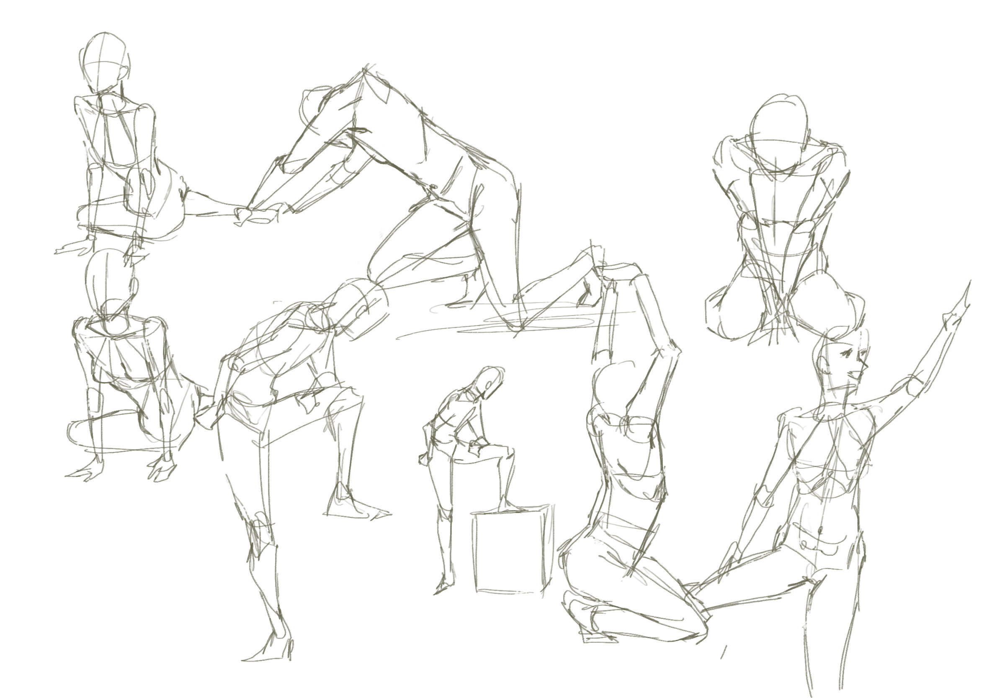
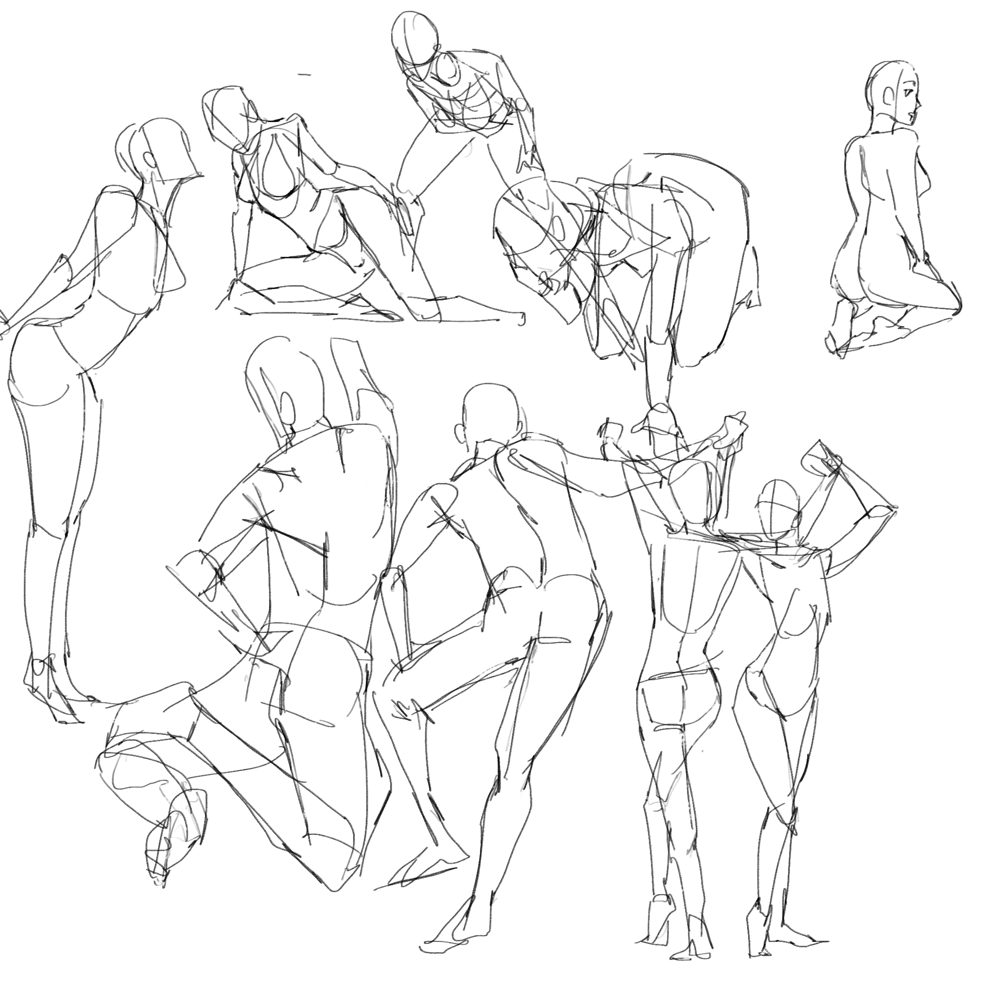
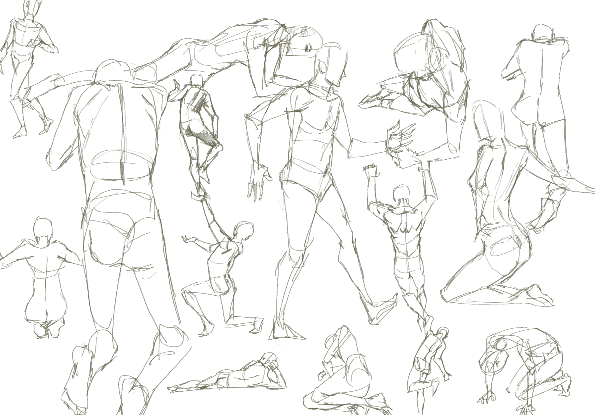
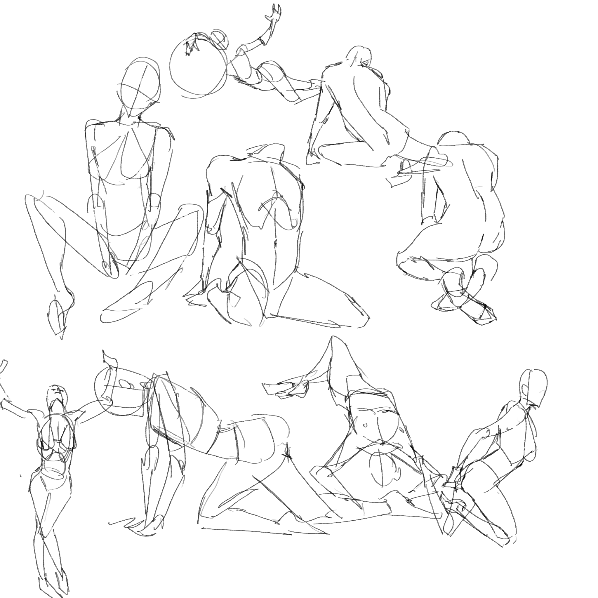
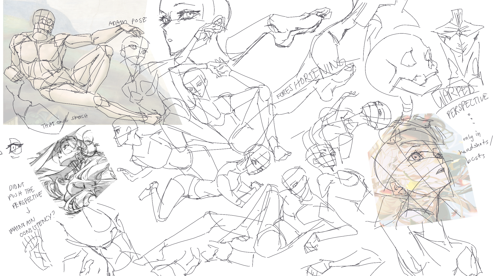
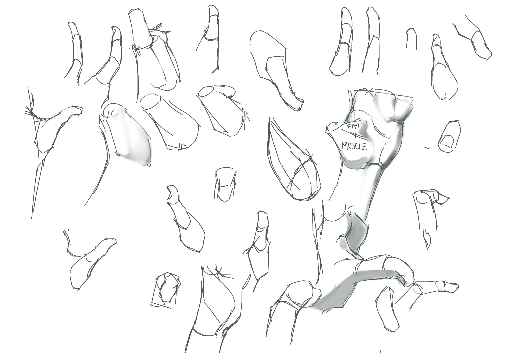
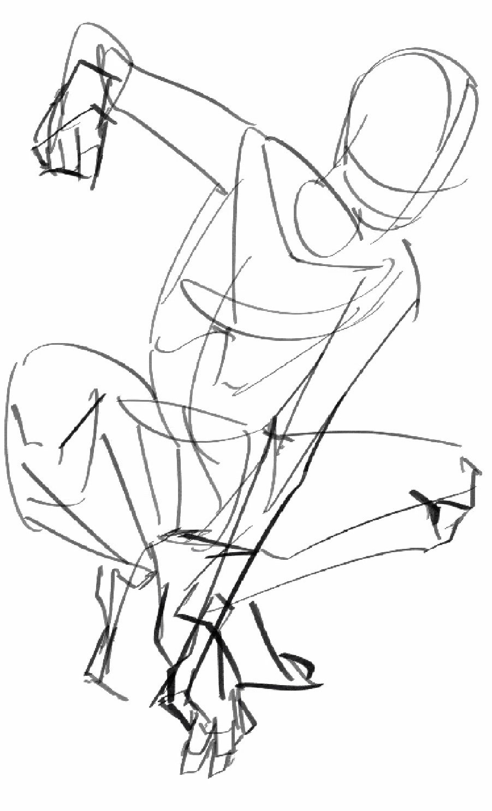
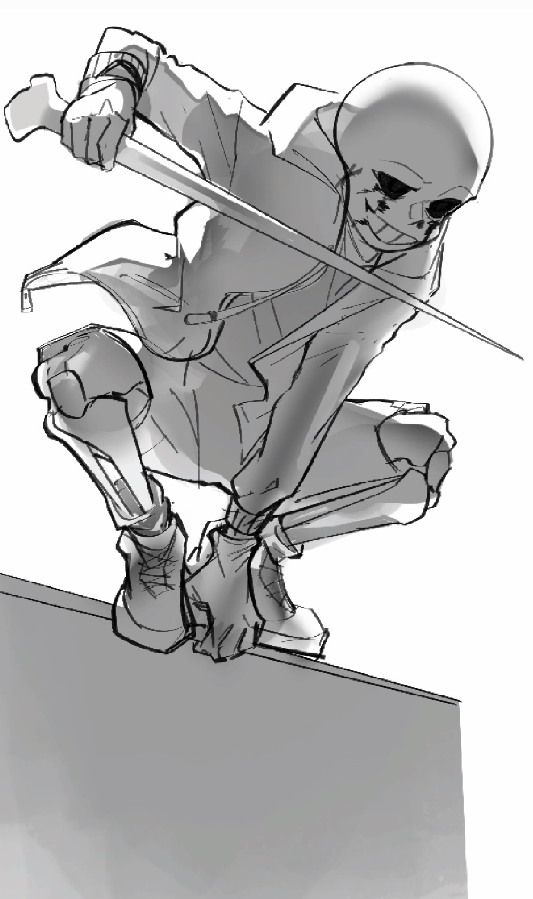

Studying the Fundamentals of Art
Studying anatomy is a continuous process. It is important that we start from the very basics. We will discuss the components of anatomy as well as exercises that can help you study them.
Do note that a basic understanding of forms and three-dimensional shapes would be heavily beneficial in studying anatomy.
Starting from skeletal anatomy may be overwhelming and tedious for some but even a basic understanding of its structure would be very helpful in the long run, notably that of the structure of the skull. Knowing which bones are most prominent as well as the joints' range of movement would help with expanding your visual library and understanding of anatomy. You are free to use other sources, but I recommend Proko's videos on skeletal anatomy for they give a lengthy yet vital foundational understanding of the human body.
Videos on muscular anatomy are also included in the playlist. This is where it may get overwhelming due to the amount of muscle groups to be discussed. Depending on what art style you're using, some groups can be simplified into one simpler and much less complex shape. Take pectorals, for example. They have a complicated fan-like structure but it is not completely necessary to learn in order to draw the chest.
I heavily suggest looking at how other artists, especially those with art styles you want to emulate, simplify these muscle groups. Simply observe and if further details are needed, you can always refer to Proko's videos or scientific diagrams (medical books make for great anatomical references.)
In need of some practical exercises? You can try any of the following:
- Figure Drawing
This one by far is the most helpful way to study anatomy. Figure drawing not only builds your strokes and line confidence but it also strengthens your understanding of human anatomy in motion, expanding your visual library. Here are some videos I recommend:
- Proko - Improving Line Quality and Rhythm
- Proko - Drawing Gestural Forms
- Proko - How to Draw Dynamic Shapes
- Proko - How to Draw Gesture
- Proko - How to Hold and Control Your Pencil
An additional figure drawing resource that I also heavily recommend is the website Line of Action.
Alternatively, you can use real life as your reference. If you ever find yourself in a crowded area, bring out your pen and paper and start sketching people. Study their pose, commit it memory, and put that image unto paper as best as you can. Granted, it may be off-putting for some to stare at strangers (and vice versa), so asking a friend to be the subject of your studies to avoid any potential faux pas is always an option.
Curious to see what figure-drawing sketches look like? Here are some samples, curated and drawn by yours truly:
    - Observation
The majority of studying art is done by observation. Using references and studying them will go a long way in improving your anatomy skills.
Here are some samples of the observational studies I've made in the past:
 This is a study of Yoneyama Mai's artwork. She is one of my biggest inspirations as an artist and I study her art often.
 This is a study of hand anatomy for which I used my own hand as a reference. Breaking down a complex structure into smaller, simpler parts is one of the most efficient ways to study anatomy. As you can see, I seperated the structure of the palm from the fingers, both of which I further seperated into simpler parts.
 These images showcase the before-and-after versions of an anatomical sketch. Learning anatomy is the first step to creating much more intricate and realistic artworks, regardless of what style you are going for.
- Critique
One of the most important aspects of art is the input you receive from your audience. Approaching fellow artists for criticsm and advice is not only incredibly helpful but also encouraged by most art communities. Having other perspectives will help you become aware of your blind or weak spots.